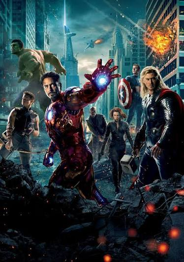

Vingadores marcam reunião e esquecem de enviar o link do Teams
Publicado em por Betty Brant

Uma reunião de emergência dos Vingadores começou com aproximadamente quarenta minutos de atraso depois que nenhum dos heróis recebeu o link correto para entrar na chamada.
Segundo fontes próximas à equipe, Nick Fury acreditava ter enviado o convite, mas descobriu que havia criado uma reunião privada consigo mesmo.
Problemas técnicos dominam encontro
Após finalmente entrarem na chamada, a situação não melhorou. Diversos participantes repetiram frases como “estão me ouvindo?” e “acho que seu microfone está desligado”.
Thor teria permanecido por quinze minutos falando sem perceber que estava no mudo.
Compartilhamento de tela falha
Nick Fury tentou apresentar informações sobre uma possível ameaça global, mas compartilhou por engano uma aba mostrando promoções de passagens aéreas.
A reunião terminou sem decisões importantes, mas todos concordaram em usar outro aplicativo na próxima vez.
Voltar para a página inicial